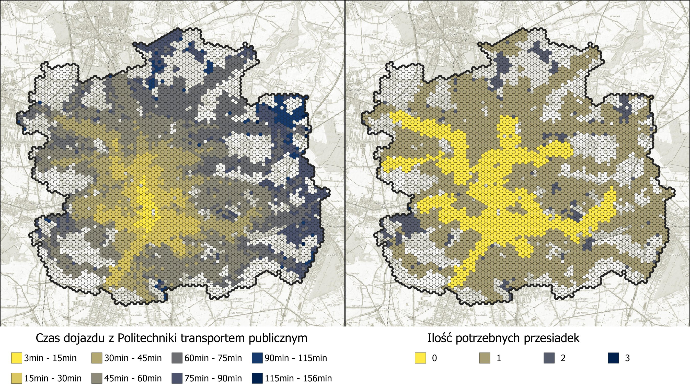

GISday 2024
STRONA W BUDOWIE
Wstęp
To repozytorium zawiera prezentacje wygłoszoną na wydarzeniu GISday 2024 na Uniwersytecie Łódzkim na wydziale Ekonomiczno - socjologicznym. Prezentacja została podzielona na 3 części i zawiera informacje odnośnie użytkowania 3 narzędzi do analiz komunikacyjnych w środowisku GIS.
Narzędzia wbudowane w QGIS + wtyczki
W pierwszej części prezentacji zostały omówione bazowe funkcje QGIS, takie jak korzystanie z bufora lub polecenia service area w celu wyznaczenia realnej drogi do przystanku.
Następnie przedstawiona została funkcjonalność wtyczek OpenRouteService, Valhalla oraz TravelTime w zakresie routingu, tworzenia analiz sieciowych i izochron. Wszystkie wtyczki oferują wybór różnych rodzajów transportu przy wyznaczaniu izochrony, jednak tylko TravelTime daje możliwość wyboru generowania izochron od transportu publicznego. Niestety wadą tej wtyczki jest bardzo mała ilość tokenów, którą możemy wykorzystywać do zapytań serwera. Each API key has a quota of queries that can be done. Currently, for free keys, this is around 10 searches / minute. Once this quota is reached, all subsequent queries fail for the cooldown period
Podsumowując, narzędzia wbudowane oraz wtyczki są to narzędzia szybko działające oraz bardzo proste w obsłudze. Ogarniczenia jakie dotyczą tych narzędzi to mała liczba zapytań do API i zależność od danych z zewnętrznego serwera oraz ograniczone możliwości zaawansowanych analiz multimodalnych. Biorąc pod uwagę zalety oraz wady tych narzędzi znajdują one zastosowanie w prostych analizach oraz przy małym obszarze opracowania.
OpenTripPlanner + R
W budowie
Pobieranie danych
Przed przystąpieniem do analiz zostanie omówione w jaki sposób pozyskać dane potrzebne do przeprowadzenia obliczeń.
Potrzebne będą nam dwie podstawowe rzeczy:
Dane o przewoźnikach możemy pozyskać z dwóch różnych źródeł:
- Transitland
- Mobility Database Ja swoje dane dla łodzi pobrałem z tej strony
Kiedy mamy dane dotyczące rozkładów jazdy następnym krokiem będzie pobranie informacji o sieci drogowej OSM z serwera Geofabrik. W tej analizie użyłem danych dla województwa łódzkiego
Konfiguracja serwera OTP
Po pobraniu danych przejdziemy do konfiguracji serwera oraz środowiska. Pierwszy krok to pobranie pliku aplikacji OTP w formacie .jar w wersji 1.5.0. Do uruchomienia tej aplikacji potrzebne będzie nam środowisko JAVA w wersji 8 Następnie potrzebujemy zainstalować język R oraz interfejs RStudio
Kiedy mamy pobrane i zainstalowane wszystkie komponenty przejdzmy do konfiguracji folderu w którym będziemy pracować. Powinniśmy stworzyć folder, do którego będziemy mieli szybki dostęp, bez polskich znaków i spacji w nazwie, ponieważ może to spowodować błąd w ścieżce dostępu. Ja swój folder stworzyłem w lokalizacji: C:\Users\Michal\otp_data. To będzie nasz folder główny z plikiem .jar, w tym folderze głównym tworzymy nowy folder graphs, folder nazwany taką nazwą jest rozpoznawany jako tzw. router, będzie nam to potrzebne w dalszej części analizy. W folderze graphs tworzymy nowy folder w którym będziemy przechowywać plik gtfs.zip i .osm.pbf. (Plik z rozkładami jazdy musi zawierać w nazwie GTFS oraz musi mieć rozszerzenie .zip. Plik z mapą osm również musi być w formacie .osm.pbf) Folder możemy go nazwać od nazwy analizowanej miejscowości np. Lodz, w takim wypadku nazwa Lodz stanie się nazwą routera i będzię można go w ten sposób wywołać. Struktura folderu powinna wyglądać w taki sposób:
graph i zapisuje do pliku .obj, przechowywane są tam dane na temat sieci drogowej oraz nałożone trasy środków transportu publicznego. Plik zostanie odrazu dodany do folderu lodz
Następnie wpisujemy komende do uruchomienia serwera.
Jako router wskazujemy folderlodz, parametr --graphs wskazuje w jakim folderze aplikacja ma szukać zapisanego graphu. parametr --server uruchamia serwer, do którego będzie mogli wysłać zapytanie.
Trzecia komenda potrzebna będzie nam w dalszej części analizy
java -Xmx4G -jar otp.jar --router lodz --graphs graphs --server
--analyst
--pointSets C:\Users\Michal\otp_data\
--analyst rozszerza możliwości aplikacji o dodatkowe analizy, a --pointSets pozwala nam dodać punkty w formacie tabeli z roszerzeniem .csv, których będziemy mogli później użyć.
Jeżeli udało nam się wszystko zrobić zgodnie z instrukcją na końcu wiersza poleceń powinniśmy dostać komunikat
Grizzly server running
Będziemy mogli się do niego podłączyć poprzez wpisanie w przeglądarkę localhost:8080
Z serwera OTP możemy korzystać z funkcji przeglądania jak i wpisywania zapytań bezpośrednio z poziomu przeglądarki internetowej, jednak jest to sposób wysoce nieefektywny i narażony na możliwość łatwego popełniania błędów w składni zapytania, dlatego do generowania zapytań będziemy używać języka R i RStudio.
Skrypty w języku R
Izochorny
Po uruchomieniu RStudio będziemy musieli zainstalować bibliotekę otpr by móc jej używać
library("otpr") # Załadowanie biblioteki otpr
setwd("C:/Users/Michal/otp_data") # Ustawienie folderu roboczego
otpcon <- otp_connect() # Połączenie się z API
my_isochrone <- otp_get_isochrone(otpcon,
location = c(51.7474, 19.4518), # Wskazanie punktu początkowego w stopniach
fromLocation = FALSE, # Analiza DO punktu początkowego
cutoffs = c(900, 1800, 2700), # Ustawienie wielkości izochron 15, 30, 45 min
mode = "TRANSIT", # Ustawienie środka transportu
date = "11-22-2024",
time = "08:30:00",
maxWalkDistance = 700) # Maksymalna odlegość piesza z i na przystanek
write(my_isochrone$response, file = "my_isochrone.geojson") # Zapisanie odpowiedzi serwera do pliku
Plik .geojson możemy wrzucić również do QGIS'a metodą drag&drop i tam poddać go dalszej analizie
Czas dojazdu z wielu miejsc
Będziemy przeprowadzać analizę dojazdu z wielu punktów do jedengo określonego miejsca,
dzięki automatyzacją w języku R wykonamy to zadanie przy użyciu pętli for
Diagram ideowy pomysłu prezentuje się następująco:
W pierwszym kroku tworzymy siatkę heksagonalną o oczku 250m.

Następnie wybieramy nasz punkt startowy, ja wybrałem miejsce przed wydziałem budownictwa na Politechnice Łódzkiej.

Następnie generujemy dla każdego heksagonu centroidy.

Centroidom nadajemy współrzędne geograficzne w postaci długości i szerokości geograficznej. Pola muszą nazywać się lat(latitude) i lon(longitude)
x(transform($geometry, 'EPSG:2177', 'EPSG:4326'))
y(transform($geometry, 'EPSG:2177', 'EPSG:4326'))
Ostatecznie nasz skrypt będzie działał tak jak zostało to pokazane na obrazku poniżej

W QGISie eksportujemy centroidy do pliku .csv. Punkty oprócz współrzędnych muszą zawierać jedno pole numeryczne (może być to np. ilość osób w heksagonie lub liczba miejsc pracy) Ja swój plik nazwałem pop.csv ze względu na to, że ma zapisaną liczbę osób mieszkających w każdym heksagonie.
library("otpr")
setwd("C:/Users/Michal/otp_data") # Set working directory
pop <- read.csv("pop.csv")
head(pop)
total <- nrow(pop) # Utworzenie tabeli total
otpcon <- otp_connect()
# Begin the loop
for (i in 1:total) { #Zapytanie każdego wiersza w tabeli total
response <- otp_get_times(otpcon,
fromPlace = c(pop[i, ]$lat, pop[i, ]$lon),
toPlace = c(51.7474, 19.4518),
mode = "TRANSIT",
detail = TRUE,
date = "11-22-2024",
time = "08:30:00",
maxWalkDistance = 700,
walkReluctance = 5,
minTransferTime = 600)
# If response is OK update dataframe
# Dodanie do tabeli atrybutów informacji o parametrach przejazdu
if (response$errorId == "OK") {
pop[i, "status"] <- response$errorId
pop[i, "duration"] <- response$itineraries$duration
pop[i, "transittime"] <-response$itineraries$transitTime
pop[i, "walktime"] <-response$itineraries$walkTime
pop[i, "waitingtime"] <- response$itineraries$waitingTime
pop[i, "transfers"] <- response$itineraries$transfers
} else {
# record error
pop[i, "status"] <- response$errorId
}
}
write.csv(pop, file = "pop_results2.csv") # Zapisanie do pliku
Mapa czasów dojazdów i ilości potrzebnych przesiadek prezentuje się w następujący sposób: 
One-to-many analysis
OTP posiada moduł pozwalający policzyć czas dojazdu do wielu różnych punktów. Do obliczenia tego uzyjemy polecenia surface. Mogłoby się wydawać, że będzie to powtórzenie poprzedniej analiy, jednak poprzez użycie surface znacznie skraca nam się czas analiy, ponieważ narzędzie OTP jest w stanie wygenerować surface model mniej więcej w takim samym czasie co pojedyncze zapytanie o trasę. Osiągane jest to przez zapisanie czasu dojazdu do każdego miejsca z punktu startowego w komórkach rastra.
W celu przeprowadzenia
Narzędzia symulacyjne VISSIM + TomTom MOVE
W budowie
Źródła
W budowie Ta prezentacja napewno by nie powstała gdyby nie niesamowita praca wykonana przez użytkownika marcusyoung i jego bibliotekę do języka R oraz poradnik jak korzystać z OTP